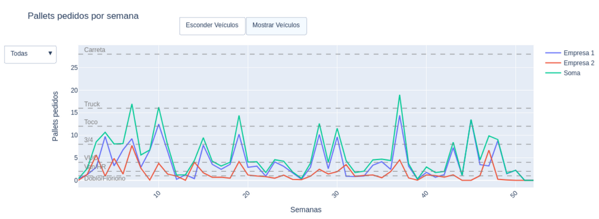
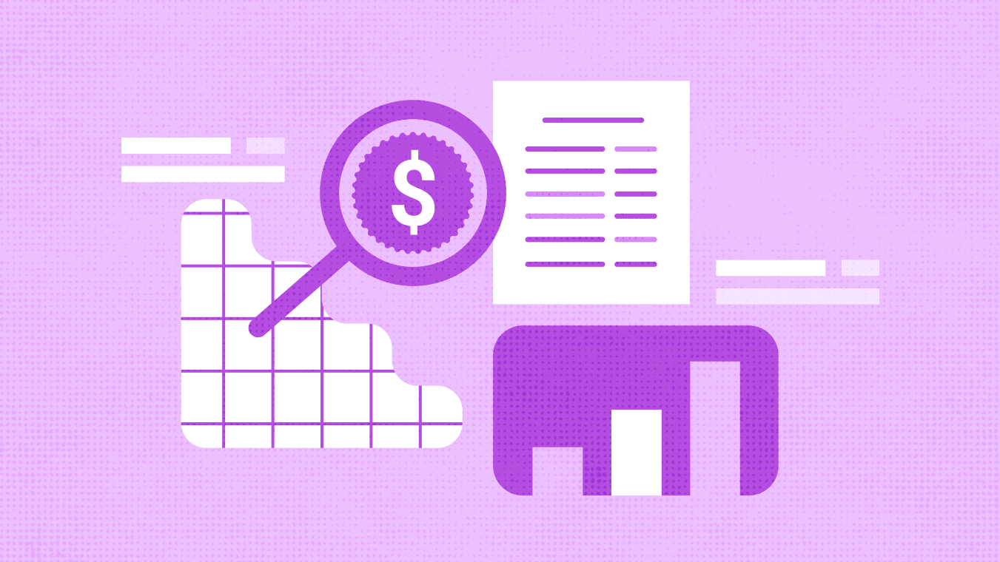
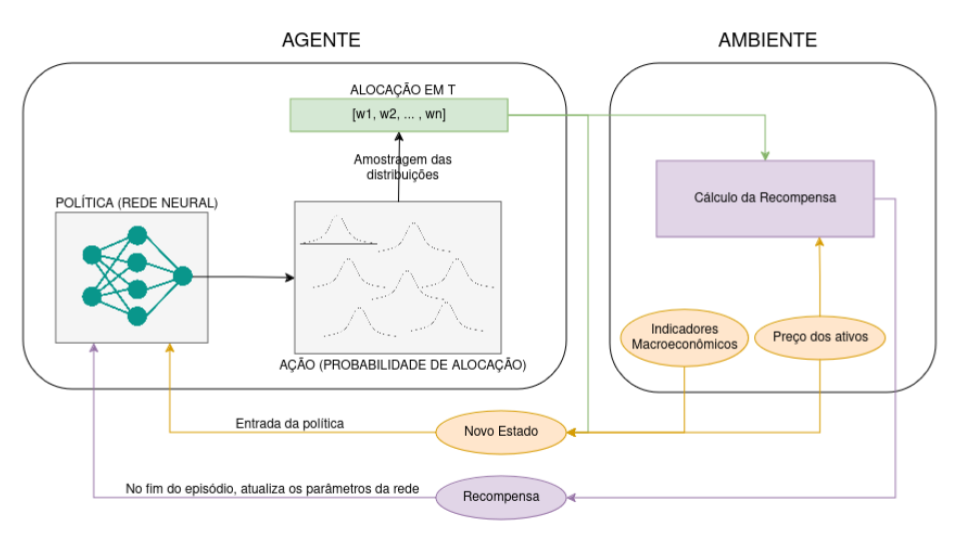
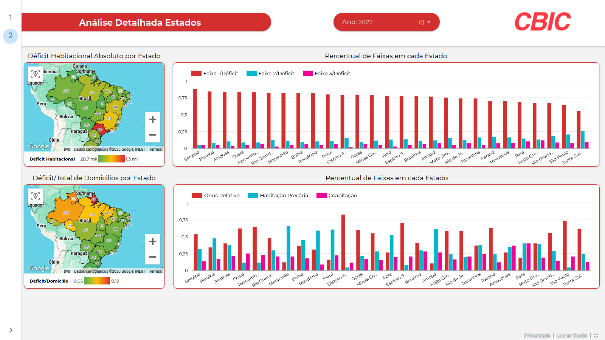
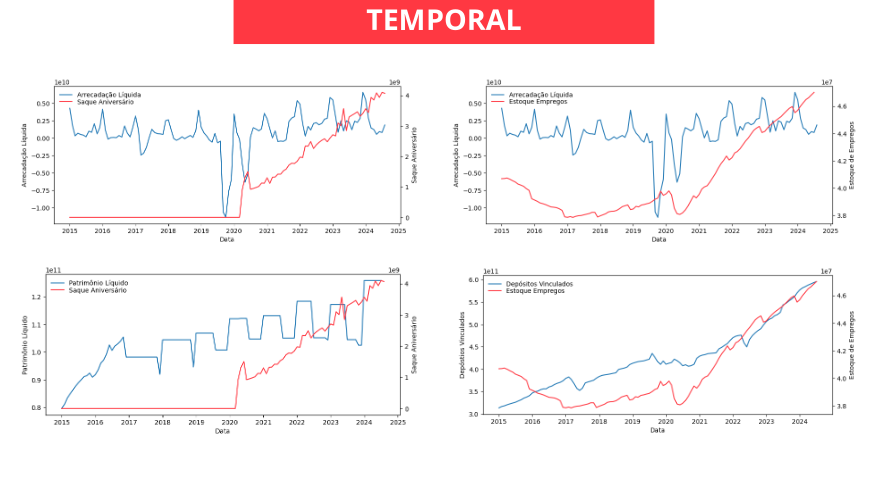
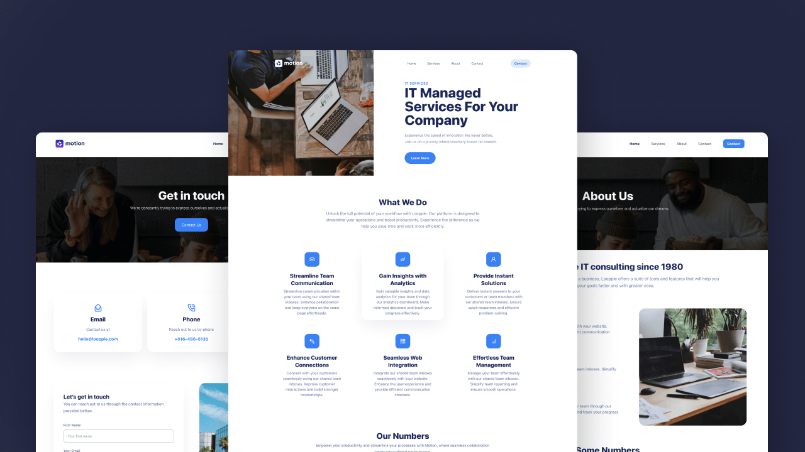

Análise Logística
Uma grande transportadora brasileira contactou a Quasili para analisar a causa raiz do fracionamento de pedidos da empresa e analisar a implementação do modelo logístico de Milk Run. O projeto utilizou dados geográficos para sugerir empresas fisicamente relacionadas e analisou o comportamento de consumo delas. O principal benefício gerado pelo projeto foi a sugestão de acordos específicos para clientes baseados em dados que possibilitaram deixar o consumo mais regular e previsível, reduzindo custos de transporte.

Pesquisa Mercadológica
Uma empresa de farmacêuticos e cosméticos estava com dificuldade de precificar seus produtos. Para auxiliar nisso, a Quasili realizou uma automação que extraía o preço do site de concorrentes específicos e disponibilizava o valor cobrado por cada player do mercado para cada produto. Com isso, a empresa obteve uma ferramenta de decisão para auxiliar na precificação de seus produtos.

Agente de Investimento Criptolé
O Criptolé é um agente de investimento preparado para se adaptar ao perfil de investidor do cliente. Ele busca democratizar o investimento em criptomoedas a partir do risco previsto a partir dos dados históricos. O Criptolé foi um projeto de inovação criado pela equipe de produtos para uma competição da FGV. A Quasili obteve o terceiro lugar nesta ocasião.

Dashboard de Déficit Habitacional
Uma empresa de construção civil tinha o objetivo de expandir suas atividades para outras regiões. No entanto, seus dados estavam bagunçados. A Quasili atuou organizando os dados e construindo uma visualização agradável para apoiar a tomada de decisão.

Análise de Fundo de Investimento
Um fundo de investimento precisava realizar uma análise de risco, estimando quantos possíveis saques poderiam acontecer no curto prazo de maneira segura. Para isso, análises preditivas foram realizadas e indicadores de sustentabilidade do fundo foram obtidos.

Landing Pages
Em desenvolvimento de software, a Quasili se destaca na criação de Landing Pages, sites otimizados para divulgação de pequenas empresas e profissionais autônomos. Essas páginas são projetadas para atrair clientes, aumentar a visibilidade e destacar os diferenciais do negócio, proporcionando uma presença digital eficiente e impactante.